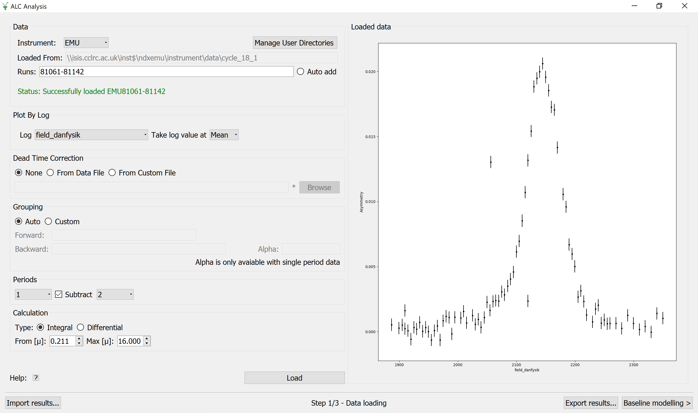
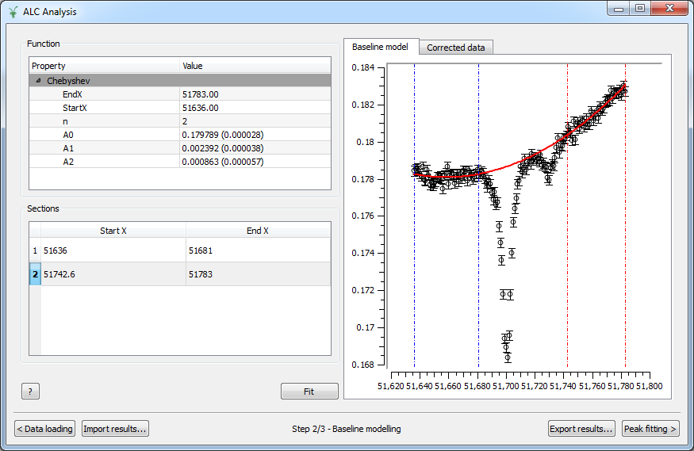
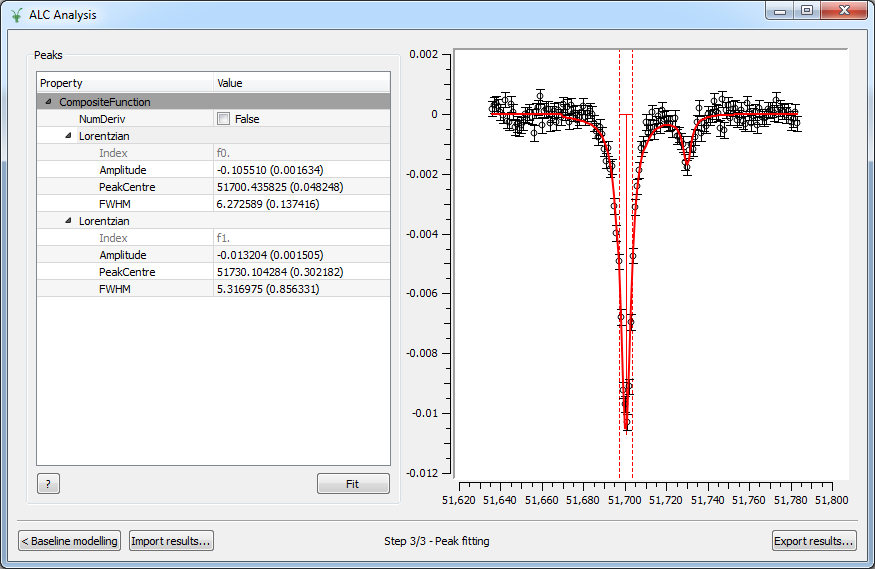

Muon ALC#
Overview#
The Avoided Level Crossing (ALC) \(\mu SR\) technique probes the energy levels of a muoniated radical system, and can be used to elucidate the regiochemistry of muonium addition, dynamic processes, and reaction kinetics, through measurement of the muon and proton hyperfine coupling interactions. Examples of how the ALC technique can be used are presented in this brochure.
Radical systems are formed during muon thermalisation, during which a portion of the implanted muons are able to capture electrons to form muonium (\(\mu+e\)). Muonium adds to centres of unsaturation in a sample (double or triple bonds) to form a muoniated radical species. The spins of the muon, unpaired electron, and protons within the sample interact through the isotropic and anisotropic components of the hyperfine interaction, forming a quantised system, described by a series of discrete energy levels.
In an ALC experiment the magnetic field is incrementally scanned, recording a specified number of positron events at each step. At certain fields, the energy levels in the muon and sample system become nearly degenerate, and are able to interact through the hyperfine coupling interaction. The spins oscillate between the two energy states resulting in a dip in the polarisation, observed as a resonance during the magnetic field scan. The three types of ALC resonance (referred to as \(\Delta 0\), \(\Delta 1\), and \(\Delta 2\) resonances) are characterised by the selection rule \(\Delta M=0, \pm 1, \pm 2\), where \(M\) is the sum of the mz quantum numbers of the spins of the muon, electron and proton. Isotropic hyperfine coupling interactions manifest as \(\Delta 0\) resonances resulting from muon-nuclear spin flip-flop transitions. The \(\Delta 0\) resonance field is dependent on the magnitude of both the muon and proton hyperfine interaction (\(A\mu\) and \(Ak\), respectively) and can occur in gaseous, liquid, or solid phase samples. The muon spin flip transition that produces the \(\Delta 1\) resonance only arises in the presence of anisotropy. Radical systems possessing complete anisotropy produce a single broad resonance and systems with axial or equatorial anisotropy produce an asymmetrical resonance line shape known as a powder pattern. The \(\Delta 2\) resonance is also observed in radicals from anisotropic environments. However, these are rarely observed experimentally due to their characteristically weak intensity line shapes. The magnitude of the hyperfine interaction is characteristic of the muon binding site, and can result in an ALC resonance associated with each of the magnetically equivalent nuclei, for each muoniated radical isomer.
The magnetic field position, the full width at half height (FWHH), and the resonance line shape are the important parameters to be extracted from the ALC spectrum. The field position of a resonance is related to the muon and/or nuclear hyperfine coupling constant. They often show strong temperature dependence and can reveal information regarding the structure of the investigated system. The FWHH of a resonance may indicate any motional dynamics present in the system, and can also be used to determine muonium addition rates. The anisotropic environments experienced by radicals in solid samples can produce a variety of ‘powder pattern’ lineshapes, which are characteristic of the orientation of the effective hyperfine tensors relative to the magnetic field, and can thus indicate any reorientational motion present.
In order to extract these parameters accurately from an ALC spectrum it is necessary to determine a baseline, perform a baseline subtraction and then fit the peaks. The Muon ALC interface integrates this sequence of operations hiding the complexity of the underlying algorithms.
Global Options#
Global options are options visible and accessible from any step in the interface. Currently, there are two buttons that can be used at any point during the analysis.
Export Results#
The ‘Export results…’ button allows the user to export intermediate results at any step. When clicked, it prompts the user to enter a label for the workspace group that will gather the ALC results. This label is defaulted to ‘ALCResults’. In the DataLoading step, data are exported in a workspace named <Label>_Loaded_Data, which contains a single spectrum. In the BaselineModelling step, data and model are exported in a set of three workspaces: a workspace named <Label>_Baseline_Workspace, which contains three spectra corresponding to the original data, model and corrected data respectively, a TableWorkspace named <Label>_Baseline_Model with information on the fitting parameters, and a second TableWorkspace named <Label>_Baseline_Sections containing information on the sections used to fit the baseline. When exporting results in the PeakFitting steps, two workspaces will be created: a <Label>_Peaks_Workspace, that contains at least three spectra: the corrected data (i.e., the data after the baseline model subtraction), fitting function and difference curve. If more than one peak was fitted, individual peaks will be stored in subsequent spectra. The <Label>_Peaks_FitResults TableWorkspace provides information about the fitting parameters and errors.
Note that the ‘Export results…’ button exports as much information as possible, which means that all the data stored in the interface will be exported when clicked, regardless of the current step. For example, if the user starts a new analysis and the button is used in the ‘DataLoading’ step, only the <Label>_Loaded_Data workspace will be created in the ADS. However, if the user proceeds with the analysis and clicks ‘Export results…’ at the ‘BaselineModelling’ step, the interface will export not only the <Label>_Baseline_* workspaces but also the <Label>_Loaded_Data workspace. In the same way, if the user has completed the peak fitting analysis and uses the button in the PeakFitting step, not only the <Label>_Peaks_* workspaces will be created, but also the <Label>_Baseline_* and the <Label>_Loaded_Data workspaces. Also, note that if ‘Export results…’ is used at a specific step but results from a previous analysis exist in a subsequent stage of the analysis, the latter will be exported as well.
Import Results#
The ‘Import results…’ button allows the user to load previously analysed data, ideally saved using ‘Export results…’. When clicked, it prompts the user to enter a label for the workspace group from which data will be imported, which is defaulted to ‘ALCResults’. The interface then searches for a workspace corresponding to the interface’s step from which it was called. This means that if the user is currently in the DataLoading step, the interface will search for a workspace named <Label>_Loaded_Data. If it is used from the BaselineModelling step, the workspace named <Label>_Baseline_Workspace will be loaded. Finally, if PeakFitting is the current step in the analysis, the workspace <Label>_Peaks_Workspaces will be imported. Note that using the ‘Import results…’ button at a specific step does not produce the loading of data corresponding to previous or subsequent steps. In addition, data at subsequent steps will not be cleared. For instance, if some data were analysed in the PeakFitting step and you went back to BaselineModelling to import a new set of runs, previous peaks would be kept in PeakFitting. Note that at this stage of development ‘Import results…’ does not load fitting results or fitting sections.
Description#
This section describes the three steps in the analysis: Data Loading, Baseline Modelling and Peak Fitting.
Data Loading#
In the Data Loading step, the instrument will be decided by the users default instrument in workbench, otherwise HIFI will be selected instead. The instrument can be manually changed. Once changed if there are already runs found using the previous instrument, the interface will automatically try to find the same runs for the new instrument. A sequence of runs are loaded through the Runs field by entering a valid expression of run numbers. The path is set once the entered run numbers have been found and is for display purposes only i.e. it is not editable.
The interface will attempt to locate runs by first searching any user defined directories and then the Data archive (only useful if you’re at ISIS). You can manage your user directories with the manage user directories button.
The input files must be Muon Nexus files with names beginning with at least one letter and followed by a number. In addition, the user must supply the Log data that will be used as X parameter from the list of available log values. Some additional options may be specified: the Dead Time Corrections, if any, can be loaded from the input dataset itself or from a custom file specified by the user. The detector Grouping is defaulted to Auto, in which case the grouping information is read from the run data, although it can be customized by setting the list of spectra for the forward and backward groups. Alpha (the balance parameter) is defaulted to 1.0 and can only be changed when analysing single period data.The user can also choose the Period number that corresponds to the red period, and the number corresponding to the green period, if the option Subtract is checked, and finally the type of Calculation together with the time limits. A click on the Load button results in the calculation of the asymmetry, displayed on the right panel.
Once data has been loaded, Auto add can be checked. This will watch for new files to be added to the path and try to load them automatically.
{kind=link}

Options#
- Instrument
The instrument
- Manage User Directories
Opens a dialog where a user can specify which directories to load from
- Path
The directory data has been loaded from
- Runs
The range of nexus files in the series
- Log
The name of the log value which will be used as the X-axis in the output workspace. The list of possible logs is automatically populated when the first nexus file is browsed and selected. If the run start/end time is chosen, they are plotted in seconds relative to the start time of the first run.
- Take log value at
The function to apply to the time series log: Mean/Min/Max/First/Last.
- Load
Computes the asymmetry according to selected options and displays it against the chosen log value.
- Dead Time Correction
Type of dead time corrections to apply. Options are None, in which case no corrections will be applied, From Data File, to load corrections from the input dataset itself, or From Custom File, to load corrections from a specified nexus file.
- Grouping
Detector grouping to apply. Auto will load the grouping information contained in the run file, while Custom allows to specify the list of spectra for both the forward and backward groups. Alpha is the balance parameter and is only available for single period data.
- Periods
Period number to use as red data. The Subtract option, if checked, allows to select the green period number that will be subtracted to the red data.
- Calculation
Type of calculation, Integral or Differential, together with the time limits.
- ?
Shows this help page.
- Loaded Data
Graph where the asymmetry as a function of the Log value is displayed. These are the data passed to the BaselineModelling step.
Baseline Modelling#
In the Baseline Modelling step, the user can fit a baseline by selecting which sections of the data should be used in the fit, and what the baseline fit function should be. To select a baseline function, right-click on the Function region, then Add function and choose among the different possibilities. Then pick the desired fitting sections by right-clicking in the Sections area as many times as sections to use. Sections are also displayed on the Baseline model graph and can be easily modified by clicking and dragging the corresponding vertical lines.
{kind=link}

Options#
- Function
Right-click on the blank area to add a baseline function.
- Sections
Right-click on the blank area to add as many sections as needed to select the different ranges to fit. Each section is coloured differently and can be modified by dragging the vertical lines.
- ?
Shows this help page.
- Fit
Fits the data.
- Baseline model
Graph where the original data and the model are displayed, together with the fitting ranges.
- Corrected data
Graph where the corrected data, i.e., the original data with the baseline subtracted, are displayed. These are the data passed to the PeakFitting step.
Peak Fitting#
In the Peak Fitting step, the data with the baseline subtracted are shown in the right panel. The user can study the peaks of interest all with the same simple interface. To add a new peak, right-click on the Peaks region, then select Add function and choose among the different possibilities in the category Peak. Add as many peaks as needed. To activate the peak picker tool, click on one of the functions in the browser and then left-click on the graph near the peak’s center while holding the Shift key. This will move the picker tool associated with the highlighted function to the desired location. To set the peak width, click and drag while holding Crtl. You can then tune the height by clicking on the appropriate point in the graph while holding Shift. Repeat the same steps with the rest of the functions in the browser and hit Fit to fit the peaks.
{kind=link}

Options#
- Peaks
Right-click on the blank area to add as many peak functions as needed.
- ?
Shows this help page.
- Fit
Fits the data.
- Peak graph
Graph where the corrected data and the fitted peaks are displayed.
Run the ALC interface#
The interface is available from the Interfaces menu: Interfaces -> Muon -> ALC.
Categories: Interfaces | Muon